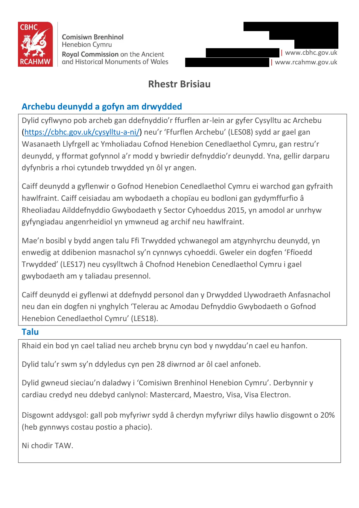

GHF-E106-R01-A2 partial
RC26-0375 price list 2026 (Welsh)

Transcript
[address redacted] [phone redacted] [email redacted] | www.cbhc.gov.uk [email redacted] | www.rcahmw.gov.uk Rhestr Brisiau Archebu deunydd a gofyn am drwydded Dylid cyflwyno pob archeb gan ddefnyddio’r ffurflen ar-lein ar gyfer Cysylltu ac Archebu (https://cbhc.gov.uk/cysylltu-a-ni/) neu’r ‘Ffurflen Archebu’ (LES08) sydd ar gael gan Wasanaeth Llyfrgell ac Ymholiadau Cofnod Henebion Cenedlaethol Cymru, gan restru’r deunydd, y fformat gofynnol a’r modd y bwriedir defnyddio’r deunydd. Yna, gellir darparu dyfynbris a rhoi cytundeb trwydded yn ôl yr angen. Caiff deunydd a gyflenwir o Gofnod Henebion Cenedlaethol Cymru ei warchod gan gyfraith hawlfraint. Caiff ceisiadau am wybodaeth a chopïau eu bodloni gan gydymffurfio â Rheoliadau Ailddefnyddio Gwybodaeth y Sector Cyhoeddus 2015, yn amodol ar unrhyw gyfyngiadau angenrheidiol yn ymwneud ag archif neu hawlfraint. Mae’n bosibl y bydd angen talu Ffi Trwydded ychwanegol am atgynhyrchu deunydd, yn enwedig at ddibenion masnachol sy’n cynnwys cyhoeddi. Gweler ein dogfen ‘Ffïoedd Trwydded’ (LES17) neu cysylltwch â Chofnod Henebion Cenedlaethol Cymru i gael gwybodaeth am y taliadau presennol.
Read more
Caiff deunydd ei gyflenwi at ddefnydd personol dan y Drwydded Llywodraeth Anfasnachol
neu dan ein dogfen ni ynghylch ‘Telerau ac Amodau Defnyddio Gwybodaeth o Gofnod
Henebion Cenedlaethol Cymru’ (LES18).
Talu
Rhaid ein bod yn cael taliad neu archeb brynu cyn bod y nwyddau’n cael eu hanfon.
Dylid talu’r swm sy’n ddyledus cyn pen 28 diwrnod ar ôl cael anfoneb.
Dylid gwneud sieciau’n daladwy i ‘Comisiwn Brenhinol Henebion Cymru’. Derbynnir y
cardiau credyd neu ddebyd canlynol: Mastercard, Maestro, Visa, Visa Electron.
Disgownt addysgol: gall pob myfyriwr sydd â cherdyn myfyriwr dilys hawlio disgownt o 20%
(heb gynnwys costau postio a phacio).
Ni chodir TAW.
[address redacted]
[phone redacted]
[email redacted] | www.cbhc.gov.uk
[email redacted] | www.rcahmw.gov.uk
Ffïoedd chwilio
Chwiliadau safonol: (hyd at 15 diwrnod gwaith)
Am ddim
Chwiliadau cymhleth: Ymholiadau sy’n gofyn am wybodaeth am dri safle neu fwy, sy’n
gofyn am lawer o chwilio drwy ddeunydd nad yw wedi’i gatalogio, neu sy’n gofyn am
grynodeb manwl o gynnwys cofnodion.
Anfasnachol
£20.00 am bob hanner awr
Masnachol
£35.00 am bob hanner awr
Uchafswm o 3 awr (D.S.: Bydd taliadau’n dal yn berthnasol os yw’r chwilio yn
aflwyddiannus)
Nodwch mai dim ond yn naliadau archif a chronfa ddata Cofnod Henebion Cenedlaethol
Cymru ac yn llyfrgell Comisiwn Brenhinol Henebion Cymru y byddwn yn ymchwilio, er y
byddwn efallai’n cyfeirio pobl fel y bo’n briodol at sefydliadau eraill lle caiff cofnodion eu
cadw. Gallwn wrthod unrhyw ymholiad cymhleth nad oes gennym y capasiti i’w ateb. Os
oes angen gwasanaethau ymchwilydd annibynol arnoch, mae gan y Llyfrgell Genedlaethol
restr o ddarparwyr gwasanaethau o’r fath yma: (https://www.llyfrgell.cymru/catalogau-
chwilio/help-i-chwilio/help-hanes-teulu/rhestr-ymchwilwyr-annibynnol)
Chwiliadau am awyrluniau: mae’r taliadau yr un fath â’r rhai ar gyfer ymholiadau cymhleth.
Bydd rhestr o’ch canlyniadau chwilio yn cael ei hanfon atoch.
Chwiliad sylfaenol (sy’n nodi a gafodd awyrlun ei dynnu ond nad yw’n nodi’r cyfrwng
na’i argaeledd; mae’r chwiliad hwn yn addas ar gyfer trefnu ymweliad i weld lluniau yn
yr Ystafell Chwilio)
Chwiliad llawn (sy’n nodi a oes gennym gopïau caled neu ddigidol o bob llun; mae’r
chwiliad hwn yn addas ar gyfer archebu sganiau neu gopïau o luniau)
Er enghraifft, bydd chwiliad sylfaenol ar gyfer un safle o fewn cyfnod penodol fel rheol yn
cymryd 0.5–1 awr, a bydd chwiliad llawn yn cymryd 0.5–1 awr ychwanegol. Gall chwiliadau
mwy helaeth neu gymhleth gymryd mwy o amser. Byddwn yn rhoi gwybod i chi beth yw’r
gost cyn bwrw ymlaen â’r chwiliad.
Gwasanaeth chwilio â blaenoriaeth (hyd at bum diwrnod gwaith)
£75.00
Rhaid cael taliad am chwiliad â blaenoriaeth cyn i’r chwiliad gychwyn, a rhaid talu amdano
hyd yn oed os na ddeuir o hyd i unrhyw ganlyniadau. D.S. Mae’r gwasanaeth hwn yn
amodol ar argaeledd.
[address redacted]
[phone redacted]
[email redacted] | www.cbhc.gov.uk
[email redacted] | www.rcahmw.gov.uk
Ceisiadau am setiau data: Mae data sylfaenol gwefan Cofnod Henebion Cenedlaethol
Cymru ar gael i’w lawrlwytho am ddim dan y Drwydded Llywodraeth Agored o Cymru
Hanesyddol a MapData Cymru. Mae’n cynnwys data tirol ac arforol, ac yn y data ceir
dolenni cyswllt â’r disgrifiadau testun hir (os ydynt ar gael). Os ydych yn ei chael yn anodd
dod o hyd i’r data hwn, ei lawrlwytho neu’i chwilio, bydd ein tîm Ymholiadau yn gwneud
pob ymdrech i gynnig arweiniad priodol i chi.
Gwasanaethau copïo (am bob copi)
Byddwn yn hepgor ffïoedd ar gyfer archebion bach (h.y. hyd at 5 o sganiau llungopïwr neu 5
ffotograff a dynnwyd gan staff, sydd o safon addas ar gyfer ymchwil ac sydd at ddefnydd
personol yn unig. D.S. Nid yw hynny’n berthnasol i ddelweddau digidol sy’n bodoli eisoes).
Llungopïau: hyd at A3
£1.50 am bob copi
Sganiau llungopïwr cydraniad isel neu ffotograffau a
dynnwyd gan y staff
£1.00 am bob
sgan/ffotograff
Yn achos archebion mawr, codir tâl ychwanegol o £15 am bob 25 o sganiau y gofynnir
amdanynt.
Gwasanaeth digido proffesiynol (hyd at 15 diwrnod gwaith)
Delwedd ddigidol sy’n bodoli eisoes (Maint ffeil mwyaf JPEG)
£10.00
Delwedd ddigidol sy’n bodoli eisoes (cydraniad ar gyfer y we, heb farc dŵr) £1.00
Sgan newydd (Maint ffeil mwyaf JPEG)
£20.00
Nodwch y caiff unrhyw waith digido proffesiynol ei gyflawni gan y Llyfrgell Genedlaethol.
Felly, mae’r gwasanaeth hwn yn dibynnu ar ddarpariaeth, polisïau a thaliadau’r Llyfrgell
Genedlaethol.
D.S. Ni fydd dogfennau’n cael eu copïo os yw’r eitem yn rhy fawr, os yw mewn cyflwr
bregus, neu os oes cyfyngiadau hawlfraint yn berthnasol.
Mae llawer o’n delweddau digidol sy’n bodoli eisoes ar gael i’w prynu a’u trwyddedu yn
uniongyrchol drwy ein system ar-lein: https://rcahmw.ibase.media/cy/home
[address redacted]
[phone redacted]
[email redacted] | www.cbhc.gov.uk
[email redacted] | www.rcahmw.gov.uk
Ymweliadau rhithiol a sesiynau ymgynghori un i un drwy Microsoft Teams
Ymweliad rhithiol: Yn ystod yr ymweliadau rhithiol hyn, gallwch weld dogfennau a
chofnodion o archif Cofnod Henebion Cenedlaethol Cymru am gyfnod byr. Bydd hynny’n
eich galluogi i nodi unrhyw ddogfennau yr hoffech archebu sganiau neu gopïau ohonynt,
neu benderfynu a oes angen i chi ymweld â’n Hystafell Chwilio yn bersonol.
Ymweliad rhithiol am 20 munud
Am ddim
Sesiwn ymgynghori ar-lein: Gellir defnyddio'r sesiynau hirach hyn i weld mwy o ddeunydd
archif. Fel arall, gellir eu defnyddio ar gyfer cyngor ynglŷn â’ch ymchwil, yn debyg i'r
cymorth a gynigir i ymwelwyr wyneb wrth wyneb yn ein Hystafell Ymchwil. Gallai hyn
gynnwys cymorth i wneud chwiliadau, cyngor ar ffynonellau yn ein llyfrgell a'n harchif, cyfle
i weld detholiad o ddogfennau a chynnig cyngor ar gamau ymchwil nesaf.
Sesiwn ymgynghori un i un am 40 munud gydag aelod o staff
£25
D.S. Ni allwn chwilio drwy ddogfennau ar eich rhan neu ddarllen darnau hir ohonynt yn
uchel yn ystod y sesiwn ymgynghori rithiol. Cysylltwch â ni os hoffech gomisiynu chwiliad
neu os bydd angen gwybodaeth fanwl o’r fath arnoch.
Oherwydd yr amser sydd ar gael, dim ond nifer gyfyngedig o ddogfennau y byddwn yn gallu
eu dangos i chi. Ni fyddant yn cael eu dal i fyny neu’u trin mewn unrhyw ffordd a allai achosi
difrod iddynt.
Rhaid archebu dogfennau ymlaen llaw ac ni ellir eu cyrchu yn ystod y sesiwn.
Gellir trefnu sesiynau bob dydd Llun neu ddydd Gwener.
[address redacted]
[phone redacted]
[email redacted] | www.cbhc.gov.uk
[email redacted] | www.rcahmw.gov.uk
Ymweliadau grŵp
Rydym yn croesawu ymweliadau i’r Llyfrgell ac Ystafell Ymchwil gan grwpiau, a drefnir
ymlaen llaw. Byddant fel rheol yn para rhwng awr a dwy awr a byddant wedi teilwra i
ddiddordebau’r grŵp. Byddant fel arfer yn cynnwys sgyrsiau, arddangosfa o ddeunydd o’r
archif, a thaith o gwmpas ystafelloedd diogel ein harchif.
Rydym hefyd yn cynnig ymweliadau a sgyrsiau rhithiol ar gyfer grwpiau, y gellir eu teilwra i
ddiddordebau grŵp unigol.
Rydym yn croesawi ymweliadau gan ysgolion cynradd ac uwchradd, prifysgolion, grwpiau
ieuenctid, grwpiau hanes lleol a hanes teulu, grwpiau sydd â diddordeb arbenigol,
cymdeithasau dinesig a chyrff proffesiynol. Gallwn gynnal sesiynau cyfrwng Cymraeg neu
Saesneg.
Am ddim, yn amodol ar argaeledd. Cysylltwch â ni i drafod
Caiff y prisiau eu pennu’n unol â Rheoliadau Ailddefnyddio Gwybodaeth y Sector
Cyhoeddus 2015 a Rheoli Arian Cyhoeddus Cymru
Croeso i chi gysylltu â ni yn Gymraeg. Byddwn yn ymateb yn Gymraeg, ac ni fydd
hynny’n arwain at oedi
You are welcome to contact us in Welsh. We will respond in Welsh, without this
causing delay
LES16: 2026Artifact description
States no letters or records on the site exist in registered files, cites archive catalogue entries, and quotes a historic-environment description.
| Catalogue ID | GHF-E106-R01-A2 |
|---|---|
| What it is | PDF document from RCAHMW (Royal Commission). Attached to an email received on 29 September 2026, their reference RC26-0375 (including RC26-0353, -0368, -0371). 5 pages. |
| From | RCAHMW (Royal Commission) |
| Email received | 29 September 2026 |
| Their reference | RC26-0375 (including RC26-0353, -0368, -0371) |
| Pages | 5 |
| File | LES16 Rhestr Brisiau 2026.pdf (303 KB) |
| State | Read |
Our integration
Part of the FOI thread with RCAHMW (Royal Commission) opened 8 September 2026. The thread's standing classification is “partial”. Statutory time: met.
Concern to test: whether this reply answers the question as asked, or a narrower one. Not checked against the original request wording here.
What cuts against the case: the body disclosed material, which is the opposite of a refusal; what it disclosed is shown here as sent.
Related: GHF-E106-R01-A1 — RC26-0375 order form (Welsh) · GHF-E106-R113-A1 — LES16 Price List 2026.pdf · GHF-E106-R64-A1 — RCAHMW RC26-0375 order form for plan scans · The covering email · What They Don’t Say: WTDS-2a274db6-1, WTDS-2a274db6-2 · EV-0432 in the evidence catalogue · Timeline · Disclosure Dartboard